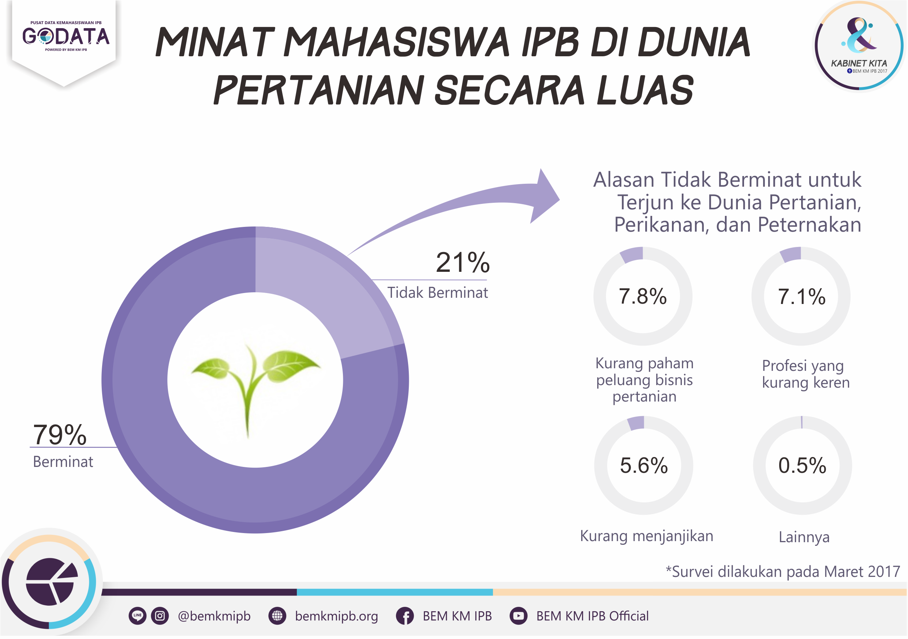

PDF
Data
(Bogor, 10 September 2017) Kedatangan Presiden RI beberapa waktu yang lalu ke Kampus IPB memberikan kesan yang mendalam untuk civitas IPB. Presiden Jokowi memberikan kritik dan sindiran kepada IPB karena lulusannya yang banyak bekerja di bidang perbankan, walaupun pada faktanya lebih banyak lulusan IPB yang bekerja di bidang pertanian secara luas. Kritik dan sindiran dari Presiden Jokowi harus ditanggapi dengan positif dengan menjadikan kritik dan sindiran tersebut sebagai dorongan bagi mahasiswa IPB agar bisa berkontribusi lebih di sektor pertanian.
Berdasarkan survei yang telah dilaksanakan oleh Biro Riset dan Pengembangan BEM KM IPB terhadap 241 responden, sebanyak 4% mahasiswa IPB belum mengetahui akan diadakannya pemilihan rektor pada tahun ini. Untuk itu dirasakan perlunya peningkatan sosialisasi kepada mahasiswa untuk mencerdaskan mengenai pemilihan rektor yang akan diadakan di penghujung tahun 2017 ini. Menurut responden yang kami survei, mahasiswa masih kurang dilibatkan dalam pemilihan rektor kali ini. Memang betul bahwa keterlibatan mahasiswa sangat kecil terhadap pemilihan rektor, karena suara mahasiswa diberikan sebanyak 2% dan juga diwakilkan oleh Presiden Mahasiswa IPB sebagai Majelis Wali Amanat Unsur Mahasiswa.
Biro Riset dan Pengembangan BEM KM IPB sudah melakukan survei pada bulan Maret lalu terkait ketertarikan mahasiswa angkatan 50, 51, 52, dan 53 untuk terjun ke dunia pertanian. Hasil dari survei tersebut menunjukkan bahwa 79 % mahasiswa aktif IPB berminat untuk terjun ke dunia pertanian secara luas, sedangkan 21% lainnya belum berminat. Hasil ini cukup positif karena masih sangat banyak mahasiswa IPB yang berniat untuk terjun ke dunia pertanian. Mahasiswa yang belum berminat untuk terjun ke dunia pertanian kebanyakan beralasan karena mereka belum paham peluang bisnis yang ada di dunia pertanian, beberapa menganggap profesi tersebut bukan profesi yang keren, dan menganggap sektor pertanian masih kurang menjanjikan.
-shalih-